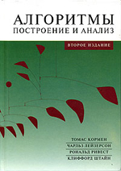

Список литературы
- Дагене В.А., Григас Г.К., Аугутис К.Ф. 100 задач по программированию. - М.: Просвещение, 1993. - 255 с.
Хорошо написанный разбор большого числа простых олимпиадных задач.
- Окулов С.М. Основы программирования. – М.: ЮНИМЕДИАСТАЙЛ, 2002. – 424 с.
- Окулов С.М. Программирование в алгоритмах. – М.: БИНОМ. Лаборатория знаний, 2002. – 341 с. Методы решения
олимпиадных задач на языке Pascal. Много оригинальных задач с решениями. Автор - один из наиболее авторитетных в
России специалистов в подготовке школьников к олимпиадам по информатике.
- Шень А. Программирование: теоремы и задачи. – 2-е изд., испр. и доп.- М.: МЦНМО, 2004. – 296 с. Очень
хорошо написанный лаконичный и четкий разбор широкого круга задач, в том числе олимпиадного характера (для
учителя).
- Долинский М.С. Решение сложных и олимпиадных задач по программированию. Учебное пособие. – СПб.: Питер,
2006. – 366 с. Методы решения сложных олимпиадных задач на примерах задач студенческого командного чемпионата
мира по программированию и других соревнований.
- Брудно А.Л., Каплан Л.И. Московские олимпиады по программированию. - М.: Наука, 1990. - 208 с. Много
разнообразных олимпиадных задач «первого поколения» с решениями на языках Pascal, C, BASIC.
- Кирюхин В.М., Лапунов А.В., Окулов С.М. Задачи по информатике. Международные олимпиады 1989-1996 гг. - М.:
ABF, 1996. - 272 с. Разбор задач с решениями.
- Скиена С.С., Ревилла М.А. Олимпиадные задачи по программированию. Руководство по подготовке к
соревнованиям. Пер. с англ. – М.: КУДИЦ-ОБРАЗ, 2005. – 416 с. Типовые методы решения олимпиадных задач с
примерами задач студенческого командного чемпионата мира по программированию.
- Московские олимпиады по информатике / Под ред. Е.В. Андреевой, В.М. Гуровица и В.А. Матюхина. – М.: МЦНМО,
2006. – 256 с. Задачи последних лет с разбором методов решения.
- Кормен Т., Лейзерстон Ч., Ривест Р. Алгоритмы: построение и анализ, Пер. с англ. – М.: МЦНМО, 2000. – 960
с. Хорошо изданный учебник энциклопедического объема с подробным разбором большого числа разнообразных методов и
алгоритмов решения задач.

- Вирт Н. Алгоритмы + структуры данных = программы. - М.: Мир, 1985.
- Вирт Н. Алгоритмы и структуры данных. - М.: Мир, 1989. Классический учебник автора языка Pascal по основным
структурам данных и их использованию в алгоритмах.
- Липский В. Комбинаторика для программистов. - М.: Мир, 1988. - 213 с. Один из лучших учебников по
дискретной математике – хорошее сочетание краткого изложения большого числа математических методов с их удачным
описанием в виде алгоритмов на псевдокоде на базе языка Pascal.
- Хохлов Д.Г. Программирование на языке высокого уровня. Часть 1. Основы программирования: Учебник - Казань:
КГТУ-КАИ, Кафедра АСОИУ, 2005. - 247 с.
- Хохлов Д.Г. Программирование на языке высокого уровня. Часть 2. Методы программирования: Учебник - Казань:
Мастер Лайн, 2006. - 266 с. Учебник для студентов первого курса по основам техники и технологии программирования
(на базе языка C) с описанием основных структур данных и методов алгоритмизации, алгоритмами на псевдокоде и
примерами решения разнообразных задач от простых до олимпиадных на языках С и Pascal.
Интернет-ресурсы
- http://neerc.ifmo.ru/school/ - олимпиады по информатике (сайт
Андрея Станкевича).
- http://codeforces.ru - социальная сеть, посвященная программированию и
соревнованиям по программированию, регулярно проводятся соревнования подходящие по уровню для школьников.
- http://www.olympiads.ru Сайт всероссийской олимпиады школьников по
информатике
- http://www.acm.ifmo.ru Сайт полуфинала студенческого командного
чемпионата мира по программированию среди студентов и Всероссийской командной олимпиады школьников по
информатике
- http://www.acm.sgu.ru Сайт с автоматической тестирующей системой
Саратовского государственного университета.
- http://online-judge.uva.es Автоматическая тестирующая система
университета г. Валадолид (Испания) – наиболее известная в мире, более 1000 задач (на английском языке).
- http://www.programming-challenges.com Проверка задач и
программы из книги «Скиена С.С., Ревилла М.А. Олимпиадные задачи по программированию».
- http://cop-nsk.ru/books - Рекомендуемая литература при подготовке к
олимпиадам.